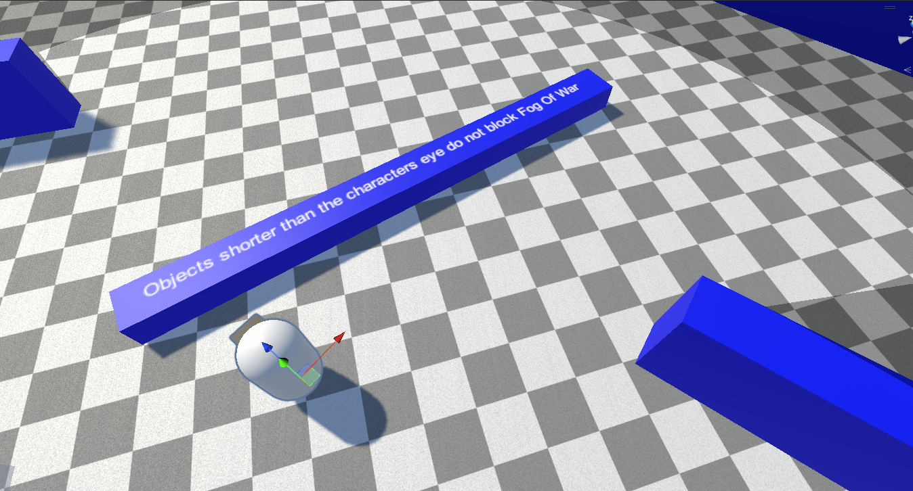

Revealers
Revealers carve line of sight out of the fog. Anything within a revealer's vision (and not blocked by an obstacle) becomes visible.
Adding a Revealer
Add a revealer component to any GameObject:
- Fog Of War Revealer 3D — for 3D projects
- Fog Of War Revealer 2D — for 2D projects
That's it — the revealer registers itself with the Fog Of War World automatically.
How Vision Is Calculated
Revealers fire raycasts to determine what is inside or outside their line of sight. Set the Obstacle Mask to the layers of the colliders that should block vision.
For a 3D revealer using the XZ plane, raycasts are performed on the X-Z plane, perpendicular to the Y axis. This means a collider that is higher or lower than the revealer's Y position will not block its vision — only obstacles at the revealer's height matter.

Core Settings
| Property | Description |
|---|---|
| View Radius | How far the revealer can see. Soften the outer edge with Soften Distance. |
| Unobscured Radius | A radius that is always lit, even outside the view angle or behind obstacles. Soften with Unobscured Soften Distance. |
| Vision Height | How tall the revealer's vision is (3D). Soften with Vision Height Soften Distance. |
| View Angle | The cone angle the revealer sees within (1–360°). Soften with Inner Soften Angle. |
| Opacity | How strongly this revealer's vision clears the fog (0–1). |
| Add Corners | Whether object corners are added as sight segments for crisp edges. |
| Obstacle Mask | The collider layers that block vision. |
For the complete property reference (with figures), see Configuration → Revealers.
Performance
Revealers do real raycasting work. When you have many of them, tune the Occlusion Quality preset, mark unmoving revealers as Static, and control how many recalculate per frame with Revealer Update Modes.
Next Steps
- Hiders — hide objects outside line of sight
- Optimization — scale to many revealers